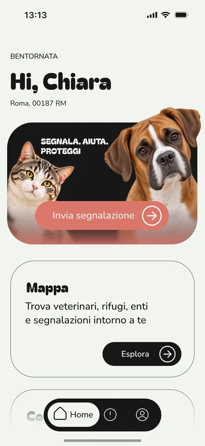
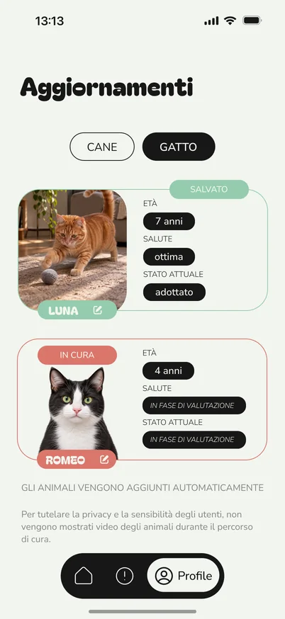
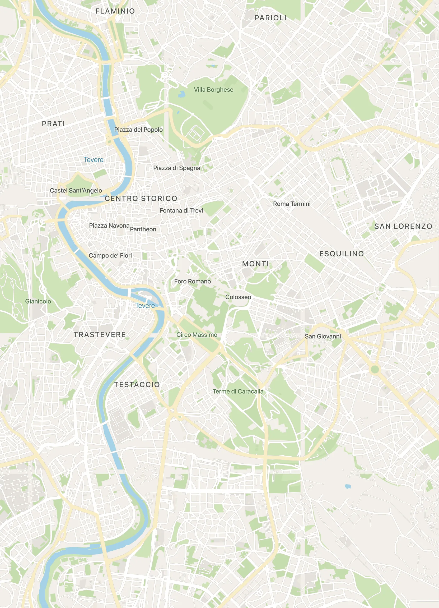

Il primo gesto
Progetto
Il sistema, poi il resto.
Prima le regole visive di PAWAY. Poi le schermate e il percorso, dallo stesso sistema.
01 · Design system
Colori, caratteri, icone, componenti.
Colore
- Fondo#F2F5EF
- Carta#FBFCF8
- Inchiostro#171717
- Corallo#DB766B
- Corallo testo#C6695F
- Blu#679FD4
- Verde#94CCAD
Carattere
Tutto il resto del progetto.
Icone
- Fulmine
- Guida
- Mappa
- SOS
- Fatto
- Chiama
- Home
- Account
Componenti
Pillola scura, freccia in cerchio.
- Abbandonato
- Ferito
- Maltrattato
- Randagio
Stati SOS. Uno solo è attivo.
Scelta binaria, blu quando è attiva.
02 · Il resto
Le schermate costruite con lo stesso sistema.
-

Home
Il primo gesto: invia una segnalazione.
-

Guida
Cane o gatto, prima di agire.
-

Segnala
Quattro situazioni da cui partire.
-

Aggiornamenti
Età, salute e stato dopo la segnalazione.
-

Mappa
Enti e veterinari, sulla stessa città.
03 · Percorso
Tutto il processo, visibile insieme.
Dal dubbio al primo gesto, senza perdere un passaggio: guida, segnalazione, aggiornamenti e ciò che resta nell’app.
-
01
Il dubbio
Hai trovato un cane o un gatto in difficoltà e non sai da dove partire.
-
02
Esplora
Apri la guida e i contatti utili prima di agire.
-
03
Segnala
Descrivi l’animale, la situazione e il luogo. Quattro punti di partenza: abbandonato, ferito, maltrattato, randagio.
-
04
Segui
Ritrova la segnalazione e gli aggiornamenti su età, salute e stato.
-
05
Resta nell’app
Mappa, SOS, Helpaw e numeri utili restano a portata di mano, anche dopo il primo gesto.